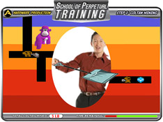
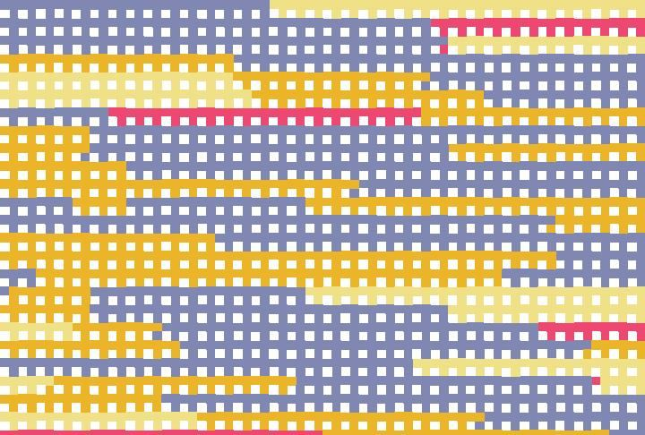
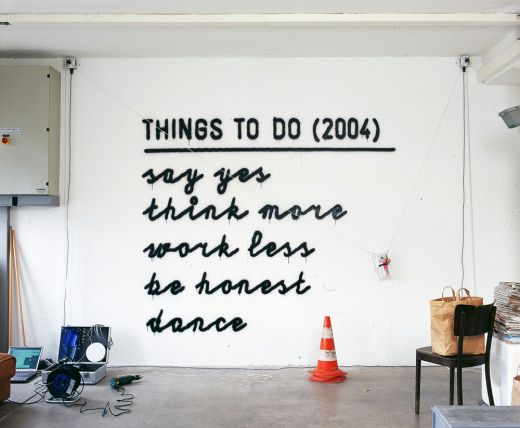

people doing strange things with electricity
The 20,070th dorkbot-nyc meeting took place on Wednesday, May 2nd, 2007, at 7pm at Location One in SoHo.
It featured the well-groomed and GMO-free:

Stephanie Rothenberg: School of Perpetual Training & other projects
The "School of Perpetual Training" is a multi-faceted project that uses game-based models to examine invisible labor in the global computer video game industry. Using play as a format for addressing critical issues around inequitable wealth distribution, low-income, manual labor and specialized, information-based labor, the project aims to question the role of play and the current production of play in contemporary culture. Other recent projects including "The Zero Hour" and "Collective Simulated Synaesthesia" will also be discussed.
http://www.pan-o-matic.com/
David Galbraith: lgOpre
lgOpre (pronounced luh - GOP - ruh) combines vintage algorithms for visual grid patterns with vinyl LP lock groove audio to create a generative system for real-time image and sound. lgOpre features an application to graphically compose the images, a scripting language for lgOpre animations, and a message-based system to link the animations to sound. A driving motivation behind the lgOpre software is the use of structured graphics, created from the translation of other complex systems, as a controller for digital sound software to yield surprising and musically useful results.
http://www.soundsokay.com/djg.html
Juerg Lehni: Hektor, Rita, Scriptographer
Juerg Lehni, visiting from Switzerland, will talk about three of his projects: Hektor (spray paint output device), Rita (whiteboard drawing/erasing device), and Scriptographer (scripting language for Adobe Illustrator, drives Hektor).
http://www.hektor.ch/